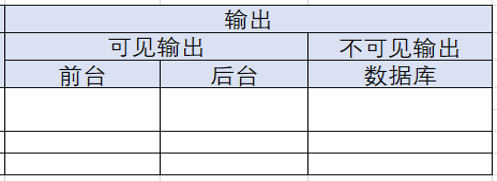
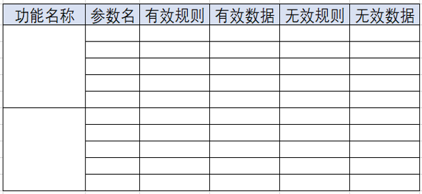
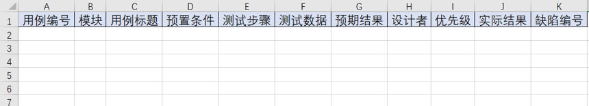

独立的功能点
什么是独立功能点？
能够完成一个独立的功能
举例：登录、注册
思路
在黑盒测试中，我们关注输入与输出之间的对应关系
黑盒测试又叫功能测试，也叫数据驱动测试。
案例: 前台注册功能
可能的输入：邮箱、用户名、密码、确认密码、验证码
可能的操作：点击提交
可能的输出：注册成功、注册失败
1 独立功能分析
输入
可见的输入：页面上直接能看见的
不可见输入：自动加入的一些数据

处理
- 正常处理
正确数据+正确的操作
- 异常处理
正确的数据+不正确操作
不正确的数据+不正确的操作
不正确的数据+正确的操作
正确数据+正确的操作+不正确的环境

输出
- 可见输出
页面跳转
相应数据的变化
成功提示
- 不可见输出
对数据库的一些影响

2 构造测试数据
思路
有效规则--->有效数据
无效规则--->无效数据

根据分析及数据设计测试用例
重点关注非法数据和非法操作

3 执行用例并提交缺陷报告
注意
实际工作中，整体用例设计完毕，经过评审以后才会执行用例
执行用例时发现缺陷要及时记录提交